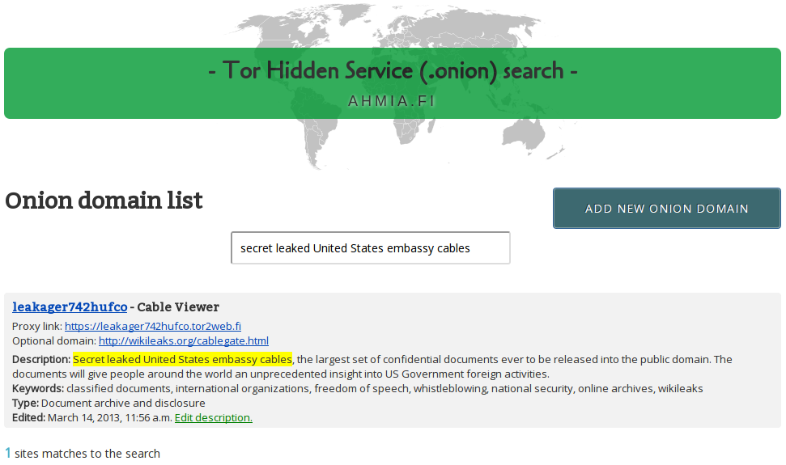
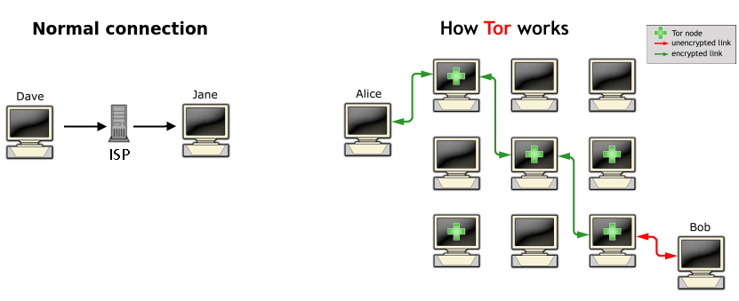
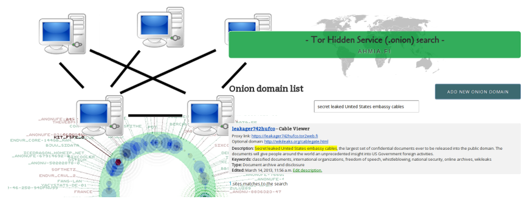

<!doctype html>
<html>
<head> 
    <meta http-equiv="content-type" content="text/html; charset=UTF-8">
    <title> Ahmia </title> 
    <link rel="stylesheet" type="text/css" media="screen, projection, print" 
     href="QuickSlides/slidy.css" />
    <link rel="stylesheet" type="text/css" media="screen, projection, print" 
     href="QuickSlides/style.css" />
    <script src="QuickSlides/showdown.js"></script>
    <script src="QuickSlides/slidy.js"></script>
    
</head>
<body>
<script type=text/markdown>
<!--

# Ahmia



---

# What is ahmia?

- A group of hacktivist working on digital human rights projects
- <a href="https://ahmia.fi/">ahmia.fi</a> is our search engine for Tor network
- Two exit nodes, traffic is 30 000 - 70 000 GB / month
- tor2web.fi proxy, for instance: <a href="https://jntlesnev5o7zysa.tor2web.fi/">TPB</a> and <a href="https://zbnnr7qzaxlk5tms.tor2web.fi/">Wikileaks</a>


---

# What is Tor?

- <a href="http://www.hacker10.com/wp-content/uploads/2011/10/tor-hidden-service-diagram-network.jpg">Anonymity network</a>
- Worldwide volunteer network of servers
- Fight against censorship and surveillance



---

# How ahmia.fi works?

- Gathering hidden service <a href="https://ahmia.fi/address/">descriptions</a> from the users
- <a href="https://ahmia.fi/search/">Full text search</a> with <a href="http://en.wikipedia.org/wiki/YaCy">YaCy</a> back-end 



---

# Ahmia.fi front-end

- Debian Squeeze
- Dual core, 2.4GHz
- 512MB RAM
- First Django 1.2.1 but then updated to 1.4.1
- Postgresql-8.4
- Average traffic is 150.00 kbit/s

---

# Large back-end needed :(

- Full text search index and crawlers
- A lot of YaCy servers needed 

---

# Special stuff

- No logs!
- Also, protect voluntary YaCy nodes
- Content management (filtering)
- APIs

---

<style>
 table,td,th {
	border:1px solid black;
 }
 td {
	text-align:left;
 }
</style>

<table>
   <caption>RESTful</caption>
   <thead>
      <tr>
         <th>Resource</th>
         <th>GET</th>
         <th>POST</th>
         <th>DELETE</th>
         <th>PUT</th>
      </tr>
   </thead>
   <tbody>
      <tr>
         <th>/address/</th>
         <td>list all hidden services (HTML, JSON or RDF/XML)</td>
         <td>add new hidden service and description</td>
         <td>-</td>
         <td>-</td>
      </tr>
      <tr>
         <th>/address/someID</th>
         <td>a hidden service (HTML, JSON or RDF/XML)</td>
         <td>-</td>
         <td>delete a hidden service</td>
         <td>banning etc.</td>
      </tr>
      <tr>
         <th>/address/someID/status</th>
         <td>a hidden service's status (up/down)</td>
         <td>test a hidden service's status and return it</td>
         <td>-</td>
         <td>-</td>
      </tr>
   </tbody>
</table>

---

# REST examples


- Ask a hidden service's information: 
	- curl -i -H "Content-Type: application/json" https://ahmia.fi/address/jntlesnev5o7zysa/ 
	- curl -i -H "Content-Type: application/rdf+xml" https://ahmia.fi/address/jntlesnev5o7zysa/

- Ask all hidden services' information: 
	- curl -i -H "Content-Type: application/json" https://ahmia.fi/address/ 
	- curl -i -H "Content-Type: application/rdf+xml" https://ahmia.fi/address/

---

# Thanks!

- irc.oftc.net #ahmia
- hostmaster[(a|t)]ahmia.fi
- <a href="https://twitter.com/AhmiaNews">https://twitter.com/AhmiaNews</a>
- <a href="http://torrorists.wordpress.com/">torrorists blog</a> and <a href="http://torroristit.wordpress.com/">Finnish version of the blog</a>


-->
</script>
<script>
var scripts = document.getElementsByTagName('script');
for (var i = 0; i < scripts.length; i++){
    var script = scripts[i];
    if (script.type != 'text/markdown') continue;
    var md = script.innerHTML.replace(/^\s<!--*/, '')
        .replace(/-->\s*$/, '');
    var markup = new Showdown.converter().makeHtml(md);
    var slides = markup.split('<hr />');
    for (var j = 0; j < slides.length; j++)
        document.write('<div class=slide>' + slides[j] + '</div>');
}
w3c_slidy.add_listener(document.body, "touchend", w3c_slidy.mouse_button_click);
</script>
</body>
</html>
